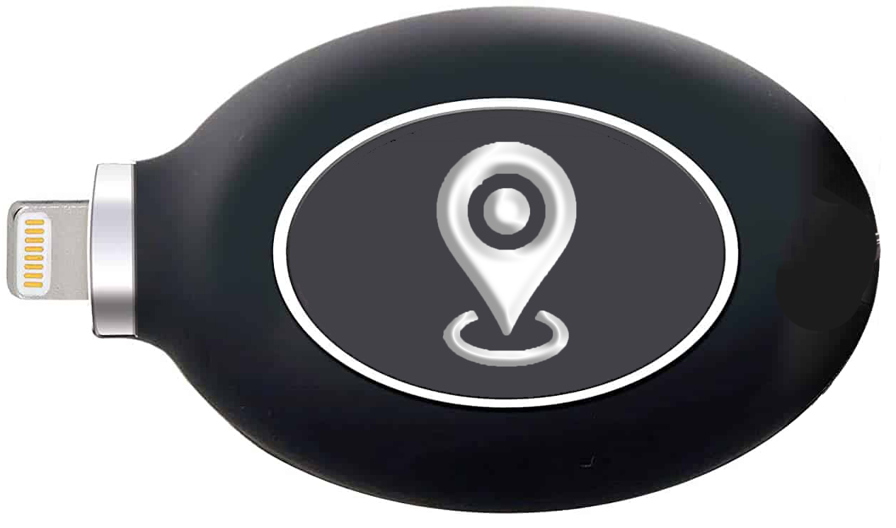

Web-Tech has developed cutting edge GPS technology and made it available to FSR Shipping. These tracking devices are powered with only the finest extended life lithium batteries to allow reliable tracking for extended periods of time in any climate. The chips will stay in constant communication with multiple satellites; it is compact and entirely contained within each tracking unit and has a service life of 10 years.
The transmitters are the smallest and most concealable transmitters on the market today. They offer a wide range of functionality and have the ability to log movements for the duration of their service life with an accuracy of less than 10 meters. Easily programmable and preset automatic functions require minimal input from the end user. Additionally all of our units come with a “Kill-Switch” that, upon activating, allows the receiver of the consignment to shut off the unit and effectively ends communication with the GPS and GLONASS network. This feature is a failsafe to ensure the security of the receiver and to allow them complete privacy once they are in possession of the consignment.
All of the devices are virtually indestructible under most circumstances. Each device goes through 32 point inspection, the most stringent inspection process in the industry
With the use of private jets and commercial airlines we deliver the fastest possible delivery while being climate-aware.
We have warehouses and contacts in all the major sea-ports of the world.
Our white vans with our company logo stand out on the streets. We bring your parcel to your doorstep the final part of the way.
We have warehouses in countries all over the world to keep your parcel safe until the moment of delivery is estimated. We offer extended storage solutions that fit your needs.